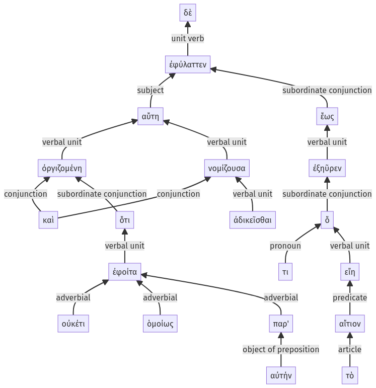

Lysias 1, 1.15.31-1.15.50a
1.15.1-1.15.30a | 1.15.51-1.15.70a
Sentence 37
1.15.31-1.15.50a
αὕτη δὲ ὀργιζομένη καὶ ἀδικεῖσθαι νομίζουσα, ὅτι οὐκέτι ὁμοίως ἐφοίτα παρ' αὐτήν, ἐφύλαττεν ἕως ἐξηῦρεν ὅ τι εἴη τὸ αἴτιον.
1 αὕτη
2 ὀργιζομένη
2 καὶ
3 ἀδικεῖσθαι
2 νομίζουσα
3 ὅτι οὐκέτι ὁμοίως ἐφοίτα παρ' αὐτήν
1 ἐφύλαττεν
2 ἕως ἐξηῦρεν
3 ὅ τι εἴη τὸ αἴτιον
αὕτη δὲ ὀργιζομένη καὶ ἀδικεῖσθαι νομίζουσα, ὅτι οὐκέτι ὁμοίως ἐφοίτα παρ' αὐτήν, ἐφύλαττεν ἕως ἐξηῦρεν ὅ τι εἴη τὸ αἴτιον.
Highlighting:
- connecting words
- unit verb
- subject
- object
Color code:
- Independent clause (level 1, transitive verb)
- circumstantial participle (level 2, transitive verb)
- circumstantial participle (level 2, transitive verb)
- indirect statement with accusative (level 3, transitive verb)
- subordinate clause (level 3, transitive verb)
- subordinate clause (level 2, transitive verb)
- subordinate clause (level 3, linking verb)
